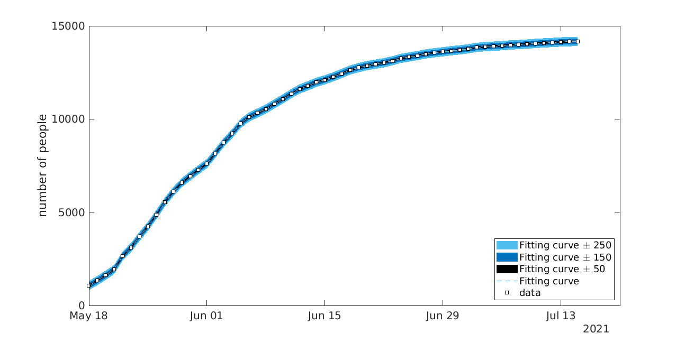
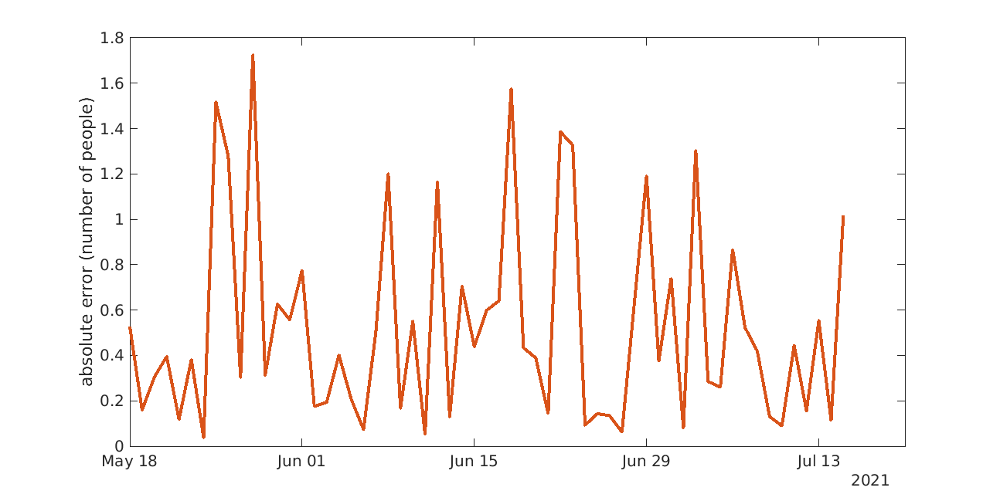
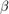
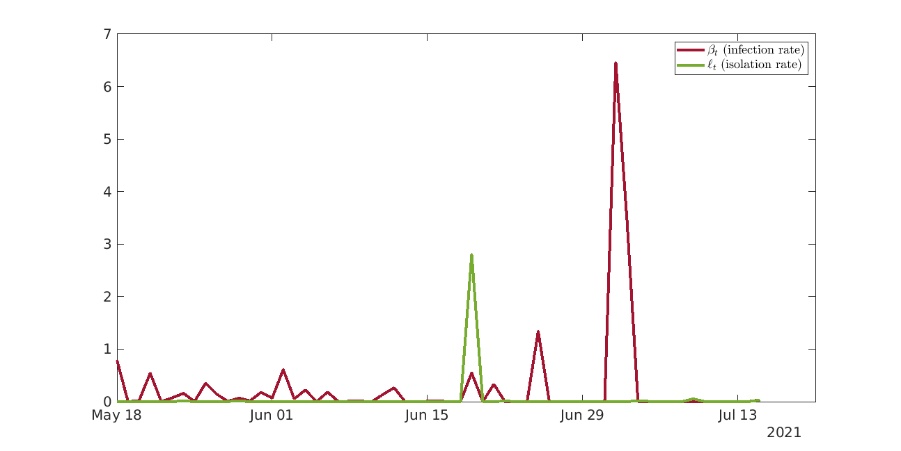
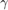
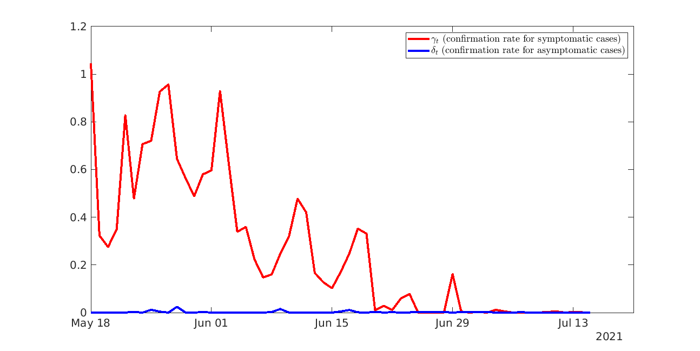
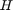
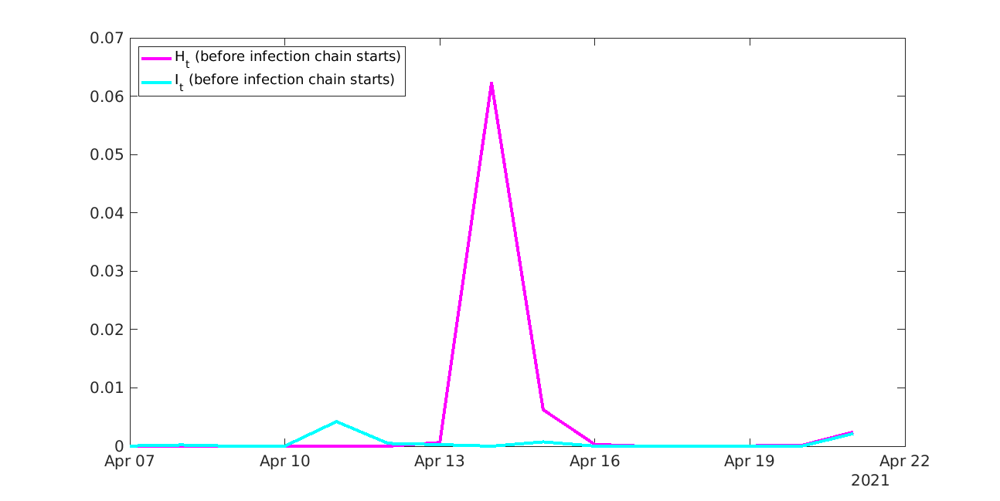

Machine-Learning-based forecasting of COVID-19 outbreak in Taiwan
In real world, we only have the time series data of confirmed COVID-19 cases. The parameters are all unknown. This MATLAB® script interpolate these parameters before predicting the COVID-19 infection, by minimizing a suitable objective quantity.
Contents
Authors
- Pu-Zhao Kow (Department of Mathematics, National Taiwan University, Email: d07221005@ntu.edu.tw)
- Jenn-Nan Wang (Institute of Applied Mathematics, NCTS, National Taiwan University, Email: jnwang@math.ntu.edu.tw)
This MATLAB® script is written by the first author.
Data
We perform the interpolation using Taiwan COVID-19 data, starting from April 22, 2021. The data are open, which can be found in Taiwan CDC, via Commonwealth Magazine. The data is given in the CSV file DATA.csv. The following is the URL: https://web.cw.com.tw/covid-live-updates-2021/
Initialization
We first declare some global variables.
global data global d global a
Now, we input data from DATA.csv.
data = readmatrix('DATA.csv');
d = length(data);
For convenience, we introduce an auxiliary parameter (fitting index), see subroutine COVID19model below.
a = 0;
Overwritting files (uncommented them when performing iterations). You can add a for-loop by yourself for multiple epoach.
close all writematrix(readmatrix('H_OUTPUT.csv'), 'H_GUESS.csv'); writematrix(readmatrix('I_OUTPUT.csv'), 'I_GUESS.csv'); writematrix(readmatrix('PARAM_OUTPUT.csv'), 'PARAM_GUESS.csv');
To perform the least square, we need some initial guesses.
HH = readmatrix('H_GUESS.csv'); II = readmatrix('I_GUESS.csv'); M = readmatrix('PARAM_GUESS.csv'); beta = M(1,:); gamma = M(2,:); delta = M(3,:); ell = M(4,:); clearvars M x0 = [HH,II,beta,gamma,delta,ell];
Interpolation using least squared
Find minimum of unconstrained multivariable function using derivative-free method.
[xmin,~,~] = fminsearch(@objective, x0);
Exiting: Maximum number of function evaluations has been exceeded
- increase MaxFunEvals option.
Current function value: 328.167282
Removing outliers (removing negative values)
for k = 1:length(x0) if xmin(k) < 0 xmin(k) = 0; end end
Output
Export .csv files
[~,C] = COVID19model(xmin); HH_min = xmin(1:15); II_min = xmin(16:30); beta_min = xmin(31+0*d:30+1*d); gamma_min = xmin(31+1*d:30+2*d); delta_min = xmin(31+2*d:30+3*d); ell_min = xmin(31+3*d:30+4*d); writematrix(HH_min, 'H_OUTPUT.csv'); writematrix(II_min, 'I_OUTPUT.csv'); writematrix([beta_min;gamma_min;delta_min;ell_min],'PARAM_OUTPUT.csv');
Figure 1: Culmulative confirmed cases in Taiwan
time = datetime(2021,4,22) + caldays(0:d-1); time2 = [time(27:d), fliplr(time(27:d))]; range250 = [(C(27:d)-250*ones(1,length(C(27:d)))), ... fliplr(C(27:d)+250*ones(1,length(C(27:d))))]; fill(time2, range250, [0.3010, 0.7450, 0.9330],'LineStyle','none'); hold on range150 = [(C(27:d)-150*ones(1,length(C(27:d)))), ... fliplr(C(27:d)+150*ones(1,length(C(27:d))))]; fill(time2, range150, [0, 0.4470, 0.7410],'LineStyle','none'); hold on range50 = [(C(27:d)-50*ones(1,length(C(27:d)))), ... fliplr(C(27:d)+50*ones(1,length(C(27:d))))]; fill(time2, range50, 'black','LineStyle','none'); hold on plot(time(27:d),C(27:d),'Color',[0.3010, 0.7450, 0.9330],... 'LineStyle','--','LineWidth',0.1); hold on plot(time(27:d),data(27:d), ... 'LineStyle', 'none', ... 'Marker', 'square', ... 'MarkerEdgeColor', 'black',... 'MarkerFaceColor', 'white',... 'MarkerSize', 5) ylabel('number of people') ylim([0, 15000]) legend('Fitting curve \pm 250', ... 'Fitting curve \pm 150', ... 'Fitting curve \pm 50', ... 'Fitting curve','data','location','southeast') hold off set(gca,'FontSize',15) set(gcf, 'units', 'normalized', 'outerposition', [0, 0, 1, 1])

Figure 2: Fitting error
figure plot(time(27:d),abs(C(27:d)-data(27:d)),'Color',[0.8500,0.3250,0.0980], ... 'LineWidth', 3); ylabel('absolute error (number of people)') set(gca,'FontSize',15) set(gcf, 'units', 'normalized', 'outerposition', [0, 0, 1, 1])

Figure 3: parameters

andfigure plot(time(27:d),beta_min(27:d),'LineStyle','-','LineWidth',3, ... 'Color',[0.6350,0.0780,0.1840]) hold on plot(time(27:d),ell_min(27:d),'LineStyle','-','LineWidth',3, ... 'Color',[0.4660,0.6740,0.1880]) legend('$\beta_{t}$ (infection rate)', ... '$\ell_{t}$ (isolation rate)', ... 'location','northeast','interpreter','latex') hold off set(gca,'FontSize',15) set(gcf, 'units', 'normalized', 'outerposition', [0, 0, 1, 1])

Figure 4: parameters

andfigure plot(time(27:d),gamma_min(27:d),'LineStyle','-','LineWidth',3, ... 'Color','red') hold on plot(time(27:d),delta_min(27:d),'LineStyle','-','Linewidth',3, ... 'Color','blue') legend('$\gamma_{t}$ (confirmation rate for symptomatic cases)', ... '$\delta_{t}$ (confirmation rate for asymptomatic cases)', ... 'location','northeast','interpreter','latex') hold off set(gca,'FontSize',15) set(gcf, 'units', 'normalized', 'outerposition', [0, 0, 1, 1])

Figure 5:

and 15 days before the infection chain startsfigure time_prev = datetime(2021,4,22) + caldays(-15:-1); plot(time_prev,HH,'LineStyle','-','LineWidth',3,'Color','m') hold on plot(time_prev,II,'LineStyle','-','LineWidth',3,'Color','c') hold off legend('H_{t} (before infection chain starts)', ... 'I_{t} (before infection chain starts)', ... 'location','northwest') set(gca,'FontSize',15) set(gcf, 'units', 'normalized', 'outerposition', [0, 0, 1, 1])

Exporting CSV files for Machine Learning, ranging from May 18 to July 15
writematrix(transpose([beta_min(27:d); ... gamma_min(27:d); ... delta_min(27:d); ... ell_min(27:d)]),'output_machine_learning.csv');
Subroutines
function objective
function error = objective(x) [error,~] = COVID19model(x); end
function p
function y = p(t) if (t>0) && (t<15) y = (0.5977/t)*(exp(-(1.105*(log(t)) - 1.417)^2)); else y = 0; end end
function COVID19model
function [Error,Confirm] = COVID19model(x) global data global d global a % declare variables (reserve memory) I = zeros(1,d+15); C = zeros(1,d+15); H = zeros(1,d+15); Q = zeros(1,d+15); S = zeros(1,d+15); beta = zeros(1,d+15); gamma = zeros(1,d+15); delta = zeros(1,d+15); ell = zeros(1,d+15); error = 0; % initialization H(1:15) = x(1:15); I(1:15) = x(16:30); beta(16:15+d) = x(31+0*d:30+1*d); gamma(16:15+d) = x(31+1*d:30+2*d); delta(16:15+d) = x(31+2*d:30+3*d); ell(16:15+d) = x(31+3*d:30+4*d); % main iteration for t = 16:15+d for i = 1:14 S(t) = S(t) + (I(t-i)-I(t-i-1))*p(i); % convolution end I(t) = I(t-1) + beta(t)*H(t-1); % equation #1 if I(t) < I(t-1) I(t) = I(t-1); end C(t) = C(t-1) + gamma(t)*S(t) + delta(t)*Q(t-1); % equation #2 if C(t) < C(t-1) C(t) = C(t-1); end Q(t) = Q(t-1) + ell(t)*(I(t) - I(t-1)) - (C(t) - C(t-1)); % equation #3 if Q(t) < 0 Q(t) = 0; end H(t) = I(t) - C(t) - Q(t); if H(t) < 0 H(t) = 0; end error = error + ((data(t-15) - C(t))^2)*(data(t-15)^a); end % output Confirm = C(16:15+d); Error = sqrt(error); end